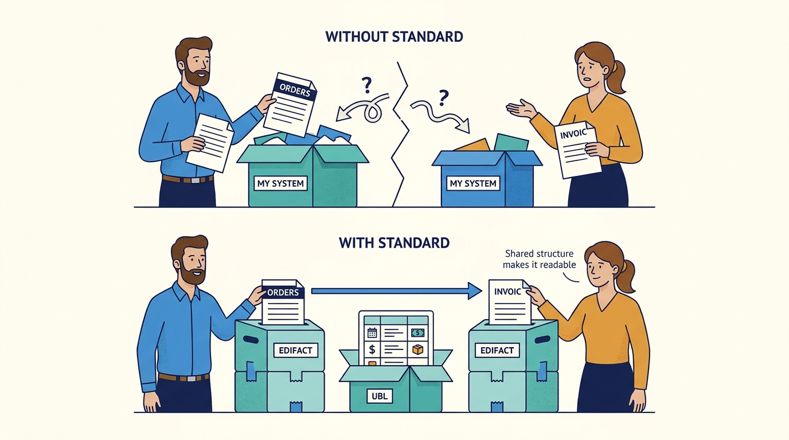
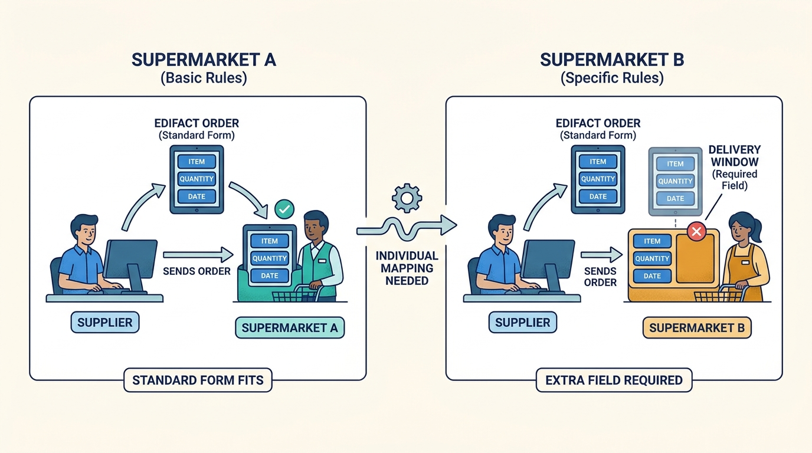
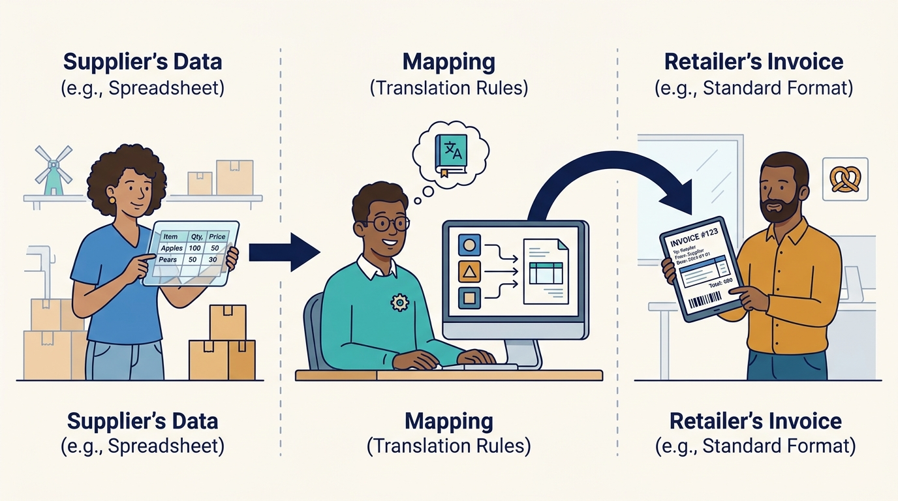
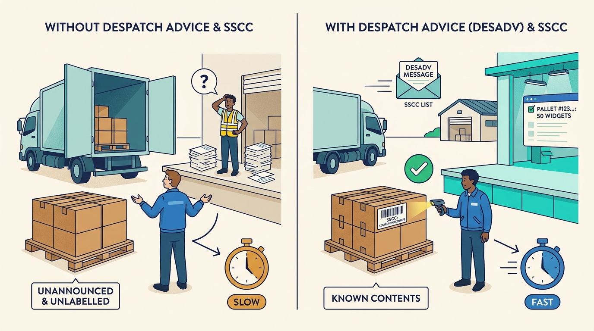
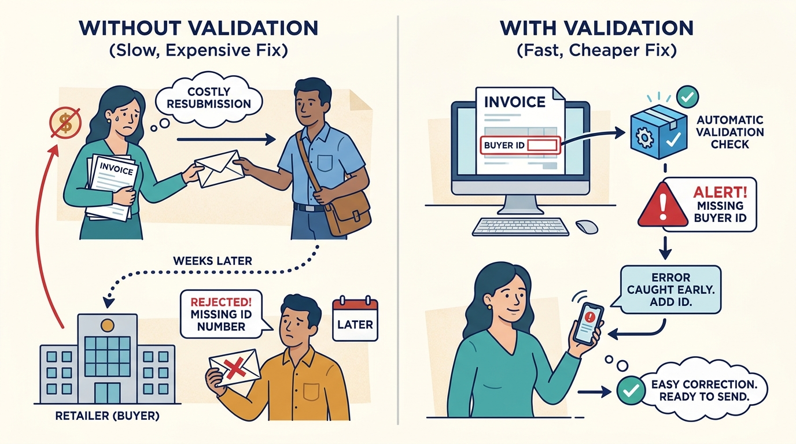
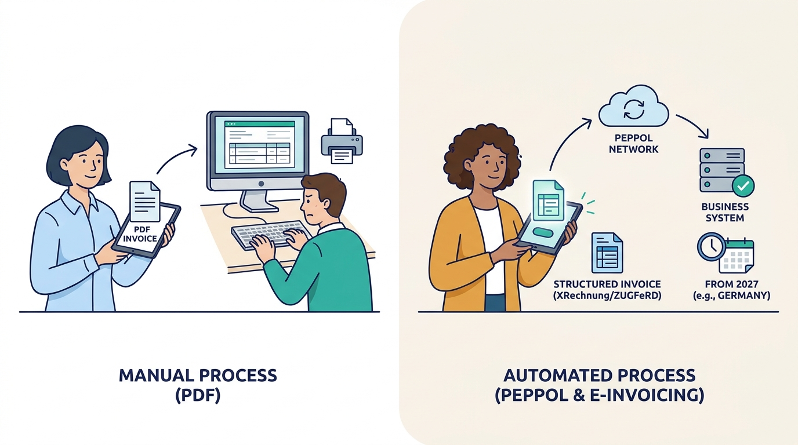
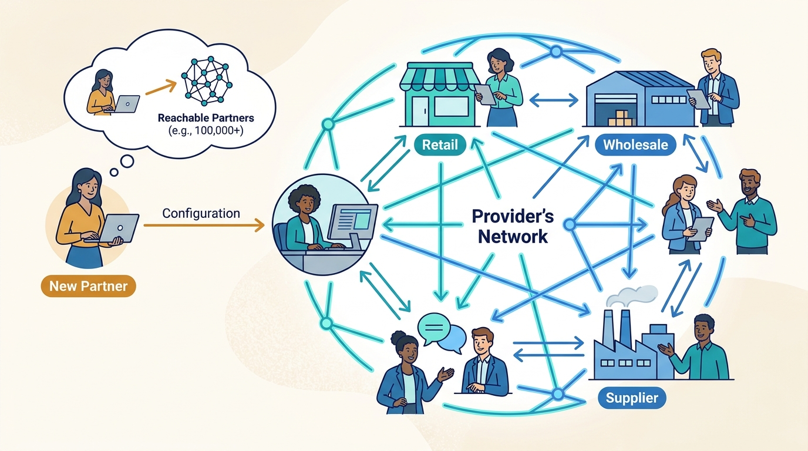

Supplier
Makes or wholesales goods and delivers them to retailers.
What matters to them
Getting every order right, deliveries accepted, and invoices paid without extra admin.
A beginner's guide
Who this is for
A curious adult from a different field, with no assumed knowledge of supply chains or business software.
What this guide covers
Covers electronic data interchange (EDI) and e-invoicing between suppliers, retailers and wholesalers, with examples from the Netherlands, Belgium and Germany. Leaves out consumer e-commerce checkout, payments and customs.
01
Explain why companies exchange business documents as structured data instead of e-mail and PDF.
Describe the order, despatch advice and invoice cycle between a supplier and a retailer.
Explain what an EDI service provider and its network do.
Name the main difficulties: partner-specific formats, data quality, compliance deadlines and trust.
02
Electronic data interchange (EDI) is the automatic exchange of business documents, such as orders, delivery notes and invoices, between the computer systems of two companies, in an agreed machine-readable format. Nobody retypes anything: the order leaves the retailer's system and lands in the supplier's system.
A supermarket chain may receive deliveries from hundreds of suppliers every day. If every order and invoice were an e-mail with a PDF, people would spend their days copying numbers, and every typo would turn into a wrong delivery or a disputed invoice. Structured exchange makes the chain faster, cheaper and more reliable, and many retailers now require it.
03
Makes or wholesales goods and delivers them to retailers.
What matters to them
Getting every order right, deliveries accepted, and invoices paid without extra admin.
Orders from many suppliers and receives goods at distribution centres.
What matters to them
Shelves stocked, deliveries announced in advance, invoices that match what arrived.
Runs the network that translates, checks and delivers messages between companies (Transus is one).
What matters to them
Reliable delivery, fast onboarding of new partners and keeping customers for years.
Connects the company's business software (ERP) to the provider.
What matters to them
Integrations that keep working without constant attention.
Sets rules such as mandatory e-invoicing and security requirements.
What matters to them
Correct, verifiable invoices and resilient supply chains.
Transports and receives goods on behalf of the retailer.
What matters to them
Knowing what is on each pallet before it arrives.
04
A published structure that says where each piece of information goes in an electronic document. EDIFACT is an older international standard widely used in retail; UBL is an XML-based standard common in e-invoicing.

Without a shared structure, a receiving system cannot read the document automatically.
Click the image to open it in a new tab.For example
An EDIFACT order message is called ORDERS; the invoice is INVOIC.
Why it matters
Without a shared structure, a receiving system cannot read the document automatically.
One company's specific rules within a standard: which optional fields it requires, which codes it uses.

This is why "we support EDIFACT" is not enough; each partner must be mapped individually.
Click the image to open it in a new tab.For example
Two supermarkets both use EDIFACT orders, but one requires a delivery-window field and the other does not.
Why it matters
This is why "we support EDIFACT" is not enough; each partner must be mapped individually.
The set of rules that converts a company's own data format into the partner's format and back.

Mapping is the main cost of adding a partner; tools like AI-assisted mapping aim to shrink it.
Click the image to open it in a new tab.For example
The supplier's ERP exports a CSV file; the mapping turns it into the retailer's EDIFACT invoice.
Why it matters
Mapping is the main cost of adding a partner; tools like AI-assisted mapping aim to shrink it.
A despatch advice is an electronic message announcing what is in a delivery. An SSCC (serial shipping container code) is a unique GS1 number printed as a barcode on each pallet label.

Unannounced or wrongly labelled pallets can be refused or slow down the warehouse.
Click the image to open it in a new tab.For example
Before the truck arrives, the retailer's DC receives a DESADV listing pallet SSCCs; at the dock it scans each label and knows the contents.
Why it matters
Unannounced or wrongly labelled pallets can be refused or slow down the warehouse.
Automatic checks that a message is complete and follows the rules before it is delivered.

Catching errors early is cheaper than a rejected invoice weeks later.
Click the image to open it in a new tab.For example
An invoice missing the buyer's identification number is blocked and the sender gets an alert.
Why it matters
Catching errors early is cheaper than a rejected invoice weeks later.
An e-invoice is a structured invoice a system can read, not a PDF. Peppol is a European network for delivering such documents between registered participants.

Governments are making structured invoices mandatory, which drives many companies to EDI providers.
Click the image to open it in a new tab.For example
From 2027 many German companies must send invoices as XRechnung or ZUGFeRD files or via Peppol.
Why it matters
Governments are making structured invoices mandatory, which drives many companies to EDI providers.
A provider's set of already-connected companies. If your customer is already on the network, connecting is mostly configuration.

Networks create value for everyone on them; this is why providers compete on reach.
Click the image to open it in a new tab.For example
Transus states more than 100,000 trading partners are reachable through its network.
Why it matters
Networks create value for everyone on them; this is why providers compete on reach.
05
A few turning points that explain current practice, mainly from a European perspective.
Large companies began exchanging documents electronically using industry-specific formats, which led to international standardisation, including the UN/EDIFACT standard.
What this helps explain
Common standards made it possible to connect many partners instead of building bespoke links for each.
Value-added networks and EDI service providers offered connections as a service, and web EDI portals let small suppliers without IT staff take part.
What this helps explain
EDI spread from large corporations to small suppliers, often because retailers required it.
Retailers increasingly made EDI, despatch advice and SSCC labels mandatory for suppliers; cloud platforms replaced in-house converters.
What this helps explain
EDI became a condition for doing business with major chains, not an optional efficiency.
Governments began mandating structured e-invoicing between businesses (for example Germany from 2025 for receiving and 2027-2028 for sending), and security laws such as NIS2 raised expectations of suppliers.
What this helps explain
Compliance deadlines now drive adoption alongside retailer demands.
06
Marieke runs the order desk at a fictional seafood producer that supplies a supermarket chain. Her company uses an EDI provider; the supermarket uses its own ordering system. Names and numbers are illustrative.
At night the supermarket's system creates an order for 40 boxes of frozen cod and sends it as an EDIFACT ORDERS message to the provider.
Why this step matters
Nobody at the supermarket types or e-mails anything.
The provider converts the order into the format Marieke's ERP understands and checks that article codes and delivery location are present.
Why this step matters
Marieke's system never needs to know the supermarket's specific format.
Her ERP shows the order; she confirms 36 boxes because stock is short, and an order response goes back automatically.
Why this step matters
The supermarket learns about the shortfall before the truck arrives, not at the dock.
The warehouse packs two pallets, prints SSCC labels, and a despatch advice listing both pallets and their best-before dates is sent.
Why this step matters
The distribution centre can plan the receipt and scan the pallets quickly.
After delivery the ERP creates an invoice for 36 boxes; the provider converts it into the supermarket's invoice format and delivers it.
Why this step matters
Because the invoice matches the order response and despatch advice, it can be approved automatically.
The outcome
The fish arrives announced, the invoice matches, and payment follows on time. Marieke spent minutes on an exception instead of hours retyping documents.
07
Suppliers save manual work and avoid fines; retailers get predictable deliveries and invoices that match automatically.
For example
A supplier with 30 retail customers would otherwise follow 30 different invoice rules by hand.
Usually the supplier pays the provider a subscription; some providers, including Transus, use a fixed monthly price with unlimited messages and partners.
For example
Transus lists plans from EUR 79 per month for web EDI to a Premium plan on request.
The retailer gets most of the efficiency but the supplier bears most of the setup, so retailers use listing conditions to drive adoption.
For example
A DIY chain requires EDI and SSCC labels from every supplier.
08
Standards allow options, so each retailer has its own guideline that also changes over time.
The competing needs
Flexibility for large retailers versus mapping work for every supplier.
In practice
Two chains use the same EDIFACT order but require different fields.
How people respond, and its limits
Providers maintain libraries of retailer requirements and increasingly use AI to propose mappings; specialists still review unusual cases.
A perfectly delivered message with a wrong price or product code still causes a dispute.
The competing needs
Strict validation blocks errors but can also block urgent orders.
In practice
An invoice is rejected because the price list was updated after the order.
How people respond, and its limits
Validation with clear alerts and monitoring; it cannot fix bad master data in the ERP.
E-invoicing rules differ per country and arrive on fixed dates.
The competing needs
Building per-country solutions versus one flexible platform.
In practice
German send obligations from 2027 and 2028.
How people respond, and its limits
Providers add new formats as configuration and partner with specialists for networks like Peppol.
If the provider fails, orders stop across thousands of relationships.
The competing needs
Outsourcing reduces in-house effort but concentrates risk.
In practice
Customers under NIS2 audit their EDI provider's security.
How people respond, and its limits
Certified security management, encrypted transport, backup data centres and incident procedures.
09
A better way to understand it
EDI is structured data that systems process automatically, with agreed formats, validation and delivery confirmation.
A better way to understand it
Small suppliers can use web portals or let a provider and an ERP partner handle the integration.
A better way to understand it
Under the new mandates an e-invoice must be a structured file such as XRechnung or a Peppol document.
10
EDI replaces retyping with structured data that systems exchange directly.
The hard part is shared meaning: each partner's rules, mapping and data quality.
Providers create value through their network, their library of partner requirements and their exception handling.
Retailer demands and government e-invoicing mandates are the main reasons companies start.
11
Pause and think through each situation, then open the answer.
Because each retailer uses its own implementation guideline within the standard.
The reasoning
The standard allows options; each partner needs a mapping that matches its specific required fields and codes.
It matched the order response and despatch advice.
The reasoning
The supermarket could compare the invoiced 36 boxes with what was confirmed and announced.
Because a failure or breach at the provider can stop or corrupt its supply chain.
The reasoning
Under NIS2 essential entities must manage supply-chain risk, including their suppliers' providers.
12
Which of your retailers already require EDI, and which documents?
What happens today when an order contains an unknown product code?
How many days does it take to connect a new trading partner?
Which countries you invoice will require e-invoices in the next three years?
13
A short provider explanation of EDI documents and flow.
Concrete dates and formats of the German mandate.
How pallet identification works.